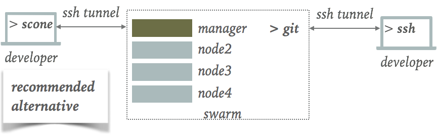

ssh Setup¶
ssh is standard way to log securely into remote hosts. The SCONE CLI requires that you can log into all hosts of your docker swarm(s) without the need for providing a password. We describe in this section how you could set this up.
scone¶
The scone utility executes commands via ssh on the SGX-capable machine to install software as well as to deploy and monitor containers.

Since we potentially execute many ssh commands, you need to configure ssh such that
-
you can log into the SGX machines without having to type a password,
-
you can use the basename of your SGX machines to login, and
-
ssh is permitted to reuse connections to reduce the execution time of the scone commands.
To do so, you need to configure ssh on your development machine and/or your container in which you run scone as well as on the sgx hosts that you are using.
Development machine¶
For each SGX host inside of your swarm, you should add a host alias to your ssh configuration.
Host alias¶
To reduce your typing overhead, scone assumes that each host has a unique basename and that you configured ssh such that you can log into the host via this basename. For example, instead of typing node2.my.very.long.domain.com, you must configure ssh such that ssh node2 is a shortcut for ssh node2.my.very.long.domain.com.
As a caveat, this basename must be sufficient for other hosts in the same swarm to reach node2. In the above figure, manager must be able to resolve node2 to the IP address of node2.my.very.long.domain.com. By default most swarms are setup this way.
On your development machine (or, more precisely in your development container), you need to add an alias node2 for node2.my.very.long.domain.com, you could add the following lines to your ssh config (stored in $HOME/.ssh/config):
Host node2
HostName node2.my.very.long.domain.com
Port 22
User scone
IdentityFile ~/.ssh/id_rsa
ssh connection reuse¶
To be able to reuse a ssh connection, you must configure ssh appropriately. You should set ControlMaster to auto and you have to specify a control path via option ControlPath. You can define a generic path like ~/.ssh/ssh_mux_%h_%p_%r - this can be the same for all hosts. For example, for some host alice you might add the following lines to $HOME/.ssh/config:
Host alice
ControlMaster auto
ControlPath ~/.ssh/ssh_mux_%h_%p_%r
user ubuntu
port 10101
hostname sshproxy.cloudprovider.com
Container Configuration¶
To simplify the ssh setup inside of containers, you might want to map your ssh configuration residing in your home directory into the containers in which you run the scone CLI. Since you probably have a different user ID inside and outside the container, you might want to copy the original ssh configuration:
> docker run -it -v $HOME/.ssh:/root/.xssh sconecuratedimages/sconecli
Inside the container, copy the external ssh configuration:
$ cp -rf $HOME/.xssh/* $HOME/.ssh
SSH Agent¶
In the container running the scone CLI, you need to start a ssh-agent in the container in which you run the scone CLI:
$ SA=$(ssh-agent) $ eval "$SA"
and add your public key by executing:
$ ssh-add
Ensure that you are now able to log into all hosts of your swarm.
SGX Host Setup¶
scone expects to have password-less access to all SGX hosts that you want to use for Scone. To do so, you need to add one of your public ssh keys to ~/.ssh/authorized_keys on all SGX host. For example, you could add your public key ~/.ssh/id_rsa.pub to file ~/.ssh/authorized_keys on each of these hosts.
Some commands are required to be executed with sudo. We assume that the user has the right to perform a password-less sudo on the SGX hosts. In case the user does not yet have this right, the user should be added to /etc/sudoers. Typically, one would add the user with the help of command visudo. The entry for user alice might look like this:
alice ALL=(ALL) NOPASSWD: ALL
SSH Credentials¶
In case you do not want to use your standard credentials inside of a container, you need to ensure that you have a pair of authentication keys inside the container. If there exists no public key $HOME/.ssh/id_rsa.pub (often the case if you use a container), you can generate a new pair by executing:
$ ssh-keygen -b 4096 -t rsa
Append the generated public key HOME/.ssh/id_rsa.pub* to file *HOME/.ssh/authorized_keys on the SGX hosts for which you to be able to log in without a password.
Also, ensure that your $HOME/.ssh/config contains an entry for each host of your swarm (see above).
© scontain.com, March 2018. Questions or Suggestions?